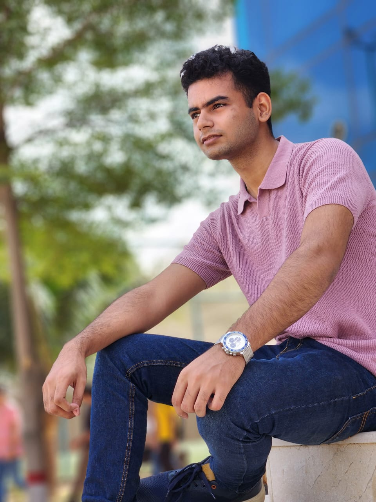
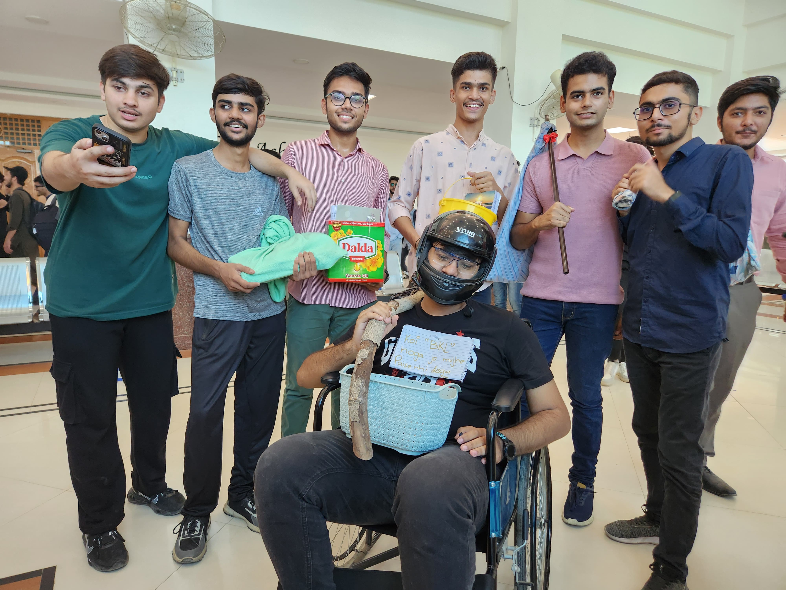

I am a Cyber Security student at FAST University with a strong passion for Network Security. I am driven by continuous learning and personal growth. In my free time, I enjoy sketching.
My Hobbies Include
"To create innovative solutions that transform industries, inspire communities, and empower individuals to achieve their fullest potential. Our vision is to lead with passion, integrity, and creativity, building a future where businesses are driven by purpose, and every product or service we offer creates value and lasting impact. I strive to be a catalyst for positive change, fostering sustainable growth and resilience in everything we do, ultimately contributing to a more connected, inclusive, and prosperous world..
My father is my greatest inspiration, a constant source of motivation and support in my life. He has always set a strong example of dedication, resilience, and kindness. Watching him work tirelessly, whether in his career or at home, I've learned the value of hard work and perseverance. He's taught me that success is not just about reaching goals but also about being honest, responsible, and treating others with respect. Despite his busy schedule, my father always finds time for our family, showing me that balance is essential in life. His patience and wisdom guide me through challenges, reminding me to stay positive and never give up. I admire his ability to handle difficult situations with calm and clarity, which inspires me to face my own challenges with courage. He is my role model, and I hope to embody his qualities as I grow..
One of my fondest memories is The Freshers Day at my University. This moment holds significance as it was one of the most exciting moment of my life.
